ספרייה
כל הטכניקות מסודרות בתיקיות
מסדרים לפי אומנות, חגורה, נושא או כל מבנה אחר – תיקיות בתוך תיקיות. לכל טכניקה מוצגת תמונה מהסרטון הראשון שלה, וחיפוש מהיר מוצא כל טכניקה לפי שם, תגית או תיאור.
הספרייה האישית שלך לטכניקות אומנויות לחימה. כל הסרטונים, ההערות ותוכניות הלימוד שלך במקום אחד, בטלפון. בלי חשבון, בלי ענן ובלי פרסומות.
הורדה לאנדרואידהאפליקציה לא נמצאת בחנות Google Play, ולכן אנדרואיד מבקש פעם אחת אישור להתקין אותה. התהליך לוקח בערך דקה. בחרו מאיפה אתם מתקינים:
פתחו את האתר הזה בטלפון (ב-Chrome) ולחצו על הורדה לאנדרואיד.
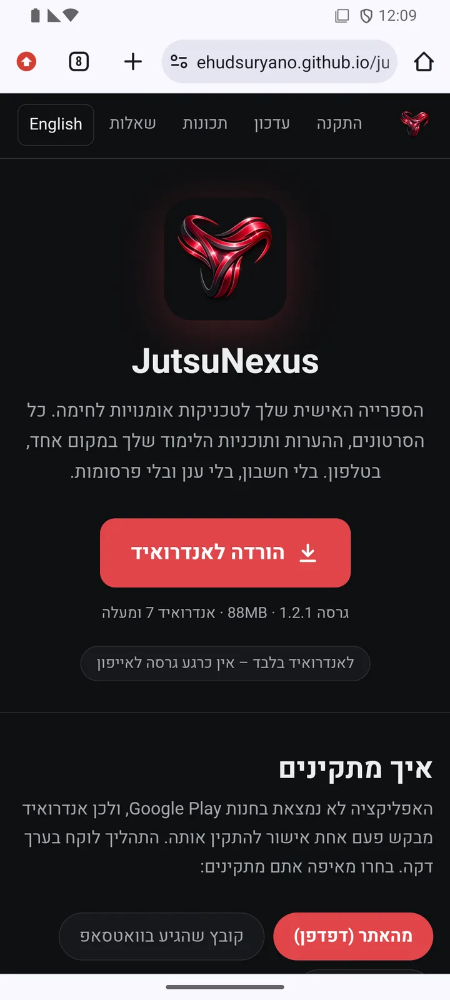
Chrome מציג "הקובץ עלול להזיק". ההודעה הזאת מופיעה לכל קובץ התקנה שלא מגיע מהחנות. לחצו להוריד בכל זאת.
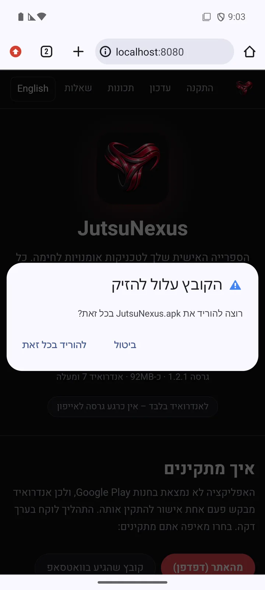
בסוף ההורדה מופיע "קובץ אחד הורד" – לחצו פתיחה. אם פספסתם את ההודעה – הקובץ נמצא ב-Chrome תחת ⋮ ← הורדות, או באפליקציית הקבצים בתיקיית הורדות.
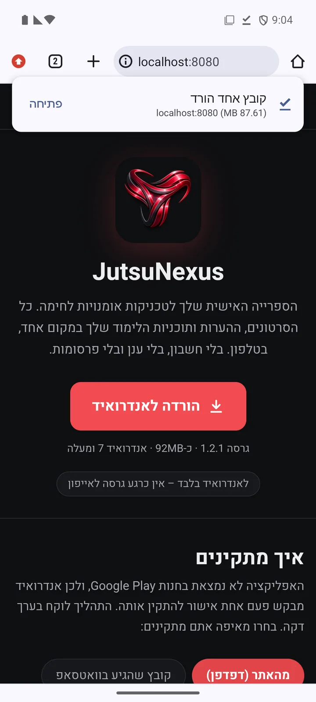
בפעם הראשונה אנדרואיד חוסם את ההתקנה: "לצורכי אבטחה, הטלפון שלך חסום להתקנת אפליקציות לא מוכרות מהמקור הזה". לחצו הגדרות.
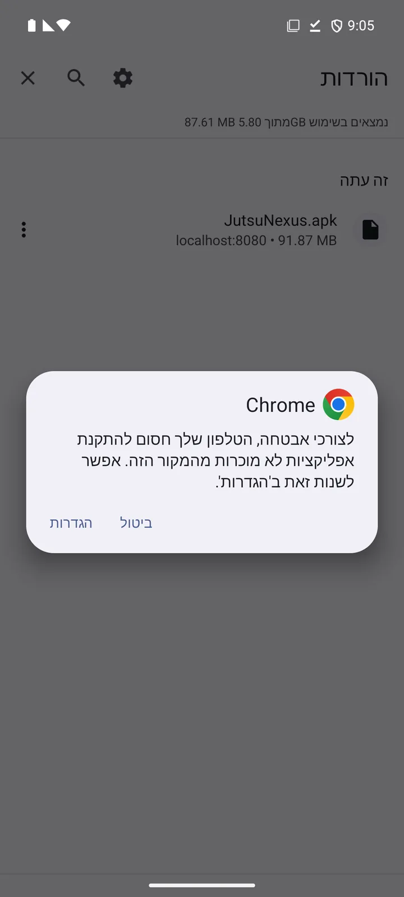
הפעילו את המתג לאפשר מהמקור הזה. בטלפונים חדשים חלון ההתקנה קופץ מיד; אם לא – לחצו על חץ החזרה.
ההרשאה ניתנת ל-Chrome בלבד, ואפשר לכבות אותה שוב אחרי ההתקנה.
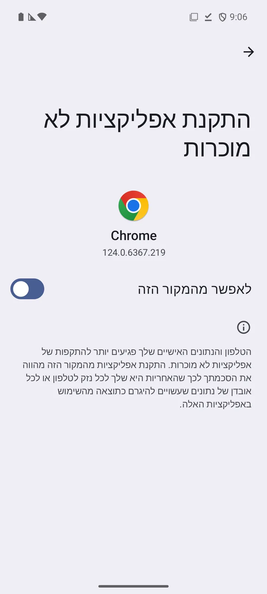
מופיע "האם ברצונך להתקין אפליקציה זו?" – לחצו התקנה.
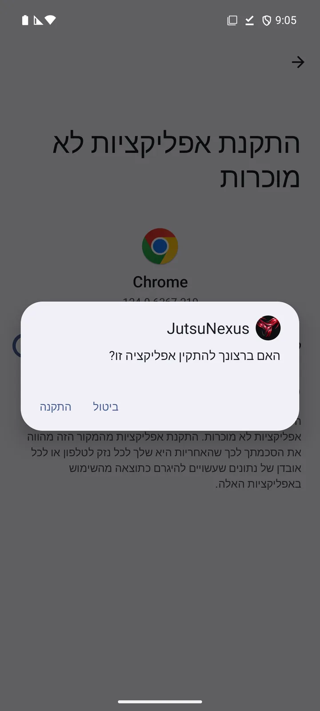
בטלפון עם חשבון Google מופיע לרוב חלון של Play Protect: "מומלץ לסרוק את האפליקציה" (App scan recommended). זה קורה לכל אפליקציה שלא מגיעה מהחנות.
לחצו לסרוק את האפליקציה (Scan app), או פתחו פרטים נוספים (More details) ולחצו להתקין בלי סריקה (Install without scanning).
לא ללחוץ על הכפתור הכחול התחתון, לא להתקין (Don't install app) – הוא מבטל את ההתקנה.
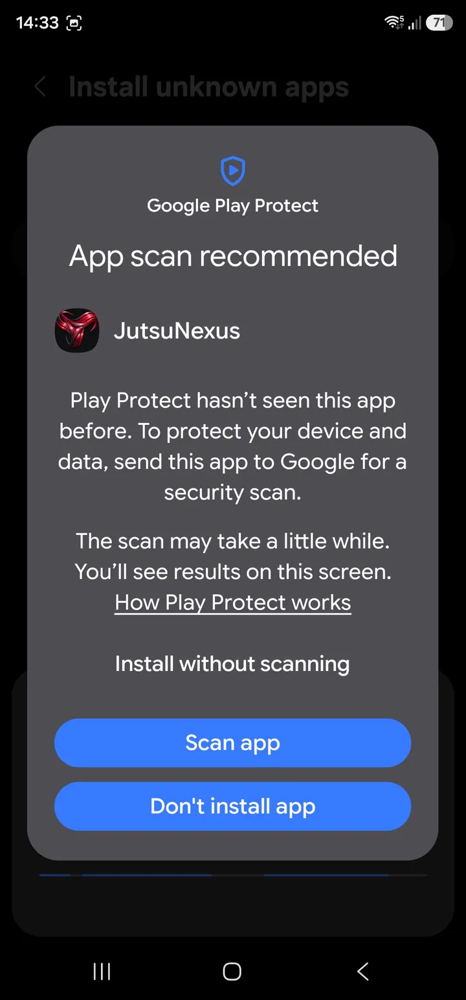
"האפליקציה הותקנה." – לחצו פתיחה. JutsuNexus מופיע עכשיו גם במסך האפליקציות.
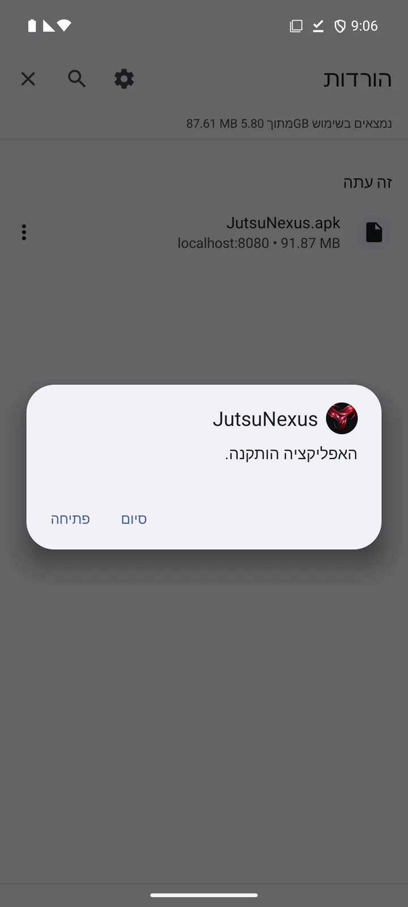
עדיף לשלוח קישור. אם אתם מעבירים את האפליקציה לחבר, שלחו לו בוואטסאפ את הקישור לאתר הזה ולא את הקובץ: הקישור תמיד מוריד את הגרסה העדכנית, והחבר מקבל גם את ההוראות. אחרי הלחיצה על הקישור ממשיכים לפי הלשונית מהאתר.
הצילומים בלשונית הזו מטלפון סמסונג שמוגדר לאנגלית. בטלפון בעברית הכפתורים נמצאים באותו מקום.
הקובץ מגיע כמסמך ששמו מתחיל ב-JutsuNexus ונגמר ב-.apk. אם יש לידו חץ הורדה, לחצו עליו קודם ולחכו שההורדה תסתיים. אחר כך לחצו על הקובץ עצמו.
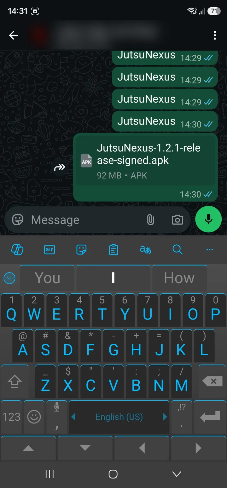
וואטסאפ מציג "הקובץ הזה עלול להזיק" (This file may be harmful). הכפתור הירוק הגדול הוא ביטול – לא אותו. לחצו על פתיחת הקובץ (Open file) שמתחתיו.
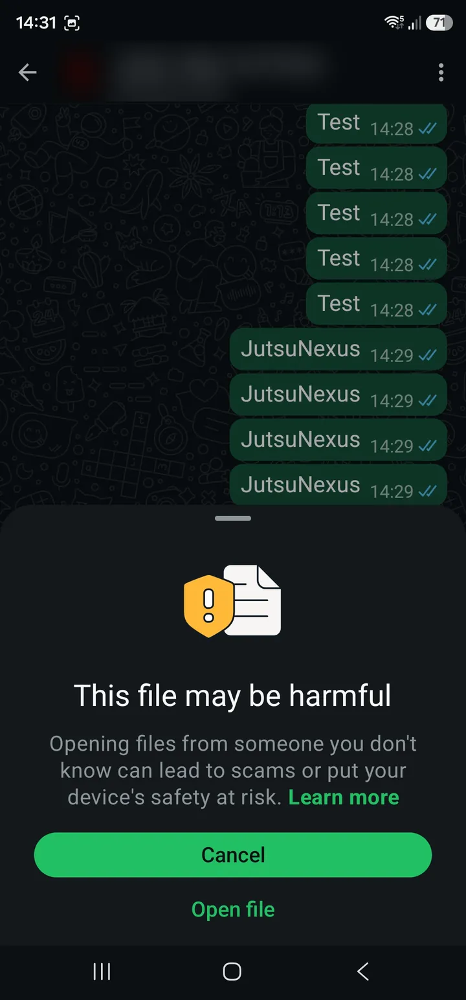
בפעם הראשונה הטלפון חוסם את ההתקנה: "נדרשת הרשאה" (Permission required) עבור WhatsApp. לחצו הגדרות (Settings).
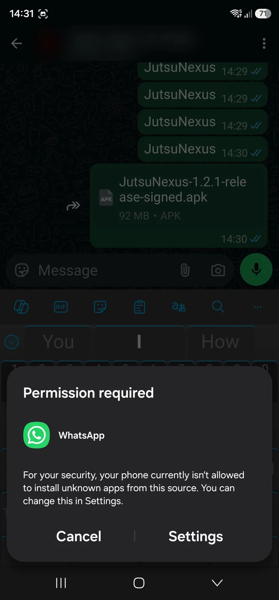
במסך התקנת אפליקציות לא ידועות (Install unknown apps) של WhatsApp הפעילו את המתג (בסמסונג: Allow permission, בטלפונים אחרים: לאפשר מהמקור הזה). חלון ההתקנה קופץ מיד.
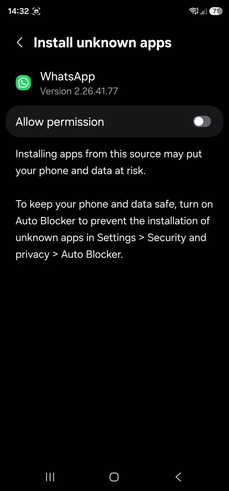
מופיע "להתקין את האפליקציה?" (Install this app?) – לחצו התקנה (Install). אם Play Protect שואל – לסרוק או פרטים נוספים ← להתקין בלי סריקה, כמו בשלב 7 בלשונית מהאתר.
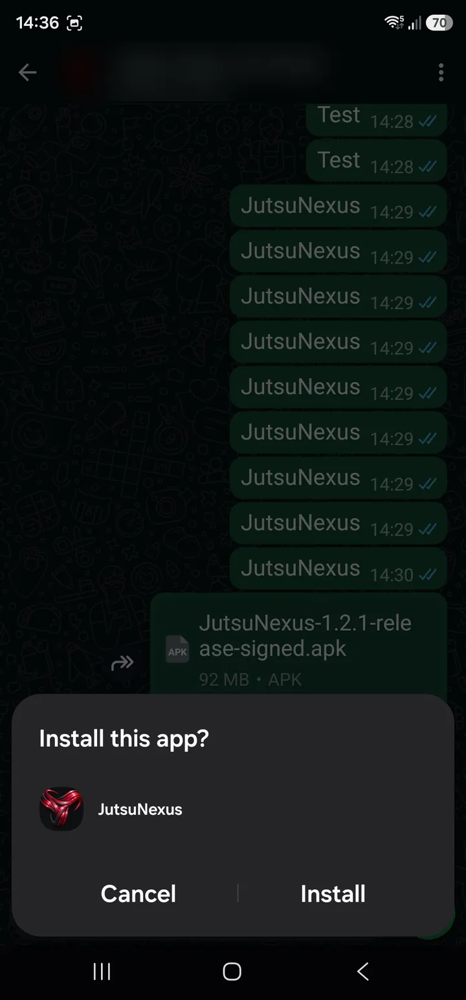
"האפליקציה הותקנה" (App installed) – לחצו פתיחה (Open).
אם וואטסאפ אומר שאין אפשרות לפתוח את הקובץ: פתחו את אפליקציית הקבצים (ובסמסונג: הקבצים שלי), חפשו את הקובץ של JutsuNexus ולחצו עליו. במקרה הזה ההרשאה תתבקש עבור אפליקציית הקבצים במקום עבור וואטסאפ.
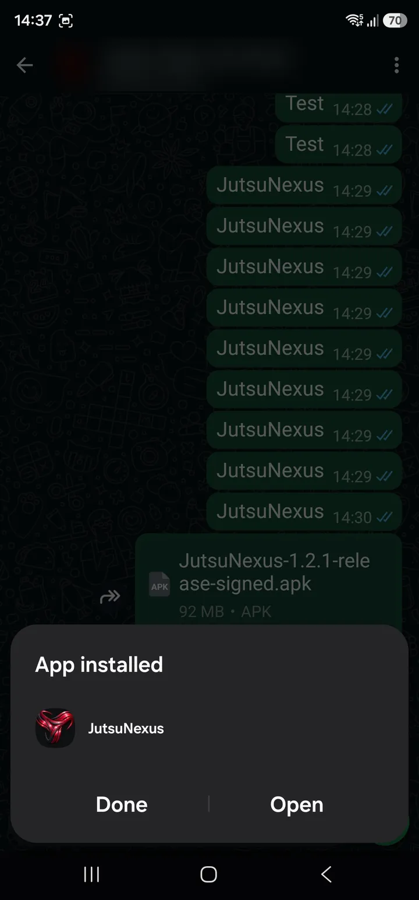
אחרי ההתקנה כדאי לכבות שוב את ההרשאה של וואטסאפ, כדי שקבצים שמגיעים בצ'אטים אחרים לא יוכלו להתקין אפליקציות. הדרך: הגדרות ← אפליקציות ← גישה מיוחדת ← התקנת אפליקציות לא מוכרות ← WhatsApp
בטלפוני סמסונג חדשים ההתקנה נחסמת לגמרי בגלל תכונה בשם חוסם אוטומטי (Auto Blocker). היא מופעלת כברירת מחדל במכשירים שיצאו עם One UI 6.1.1 ומעלה (למשל סדרת S24 ומכשירים חדשים יותר). אם ניסיתם להתקין ושום דבר לא קרה, או שהופיעה הודעה שההתקנה נחסמה – זו הסיבה.
הגדרות ← אבטחה ופרטיות (Security and privacy). גוללים למטה עד חוסם אוטומטי (Auto Blocker). אפשר לכבות אותו ישירות מהמתג שלידו.
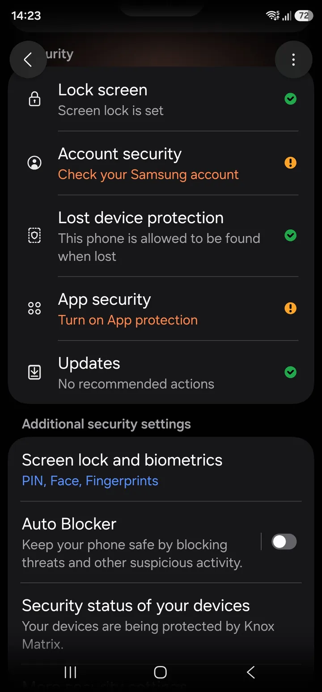
במסך של החוסם האוטומטי המתג העליון צריך להיות על כבוי (Off). הטלפון יבקש טביעת אצבע או קוד. בגרסאות חדשות של One UI אפשר לבחור לכבות לזמן מוגבל, והחוסם יחזור לפעול לבד אחרי ההתקנה.
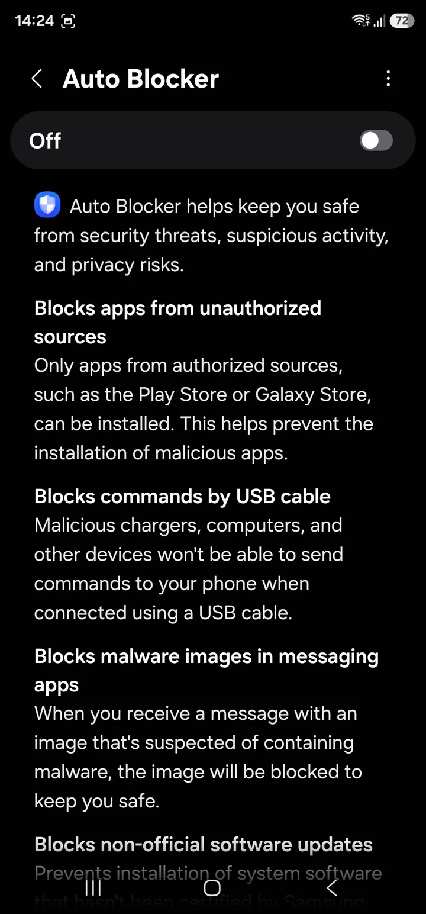
אחרי ההתקנה אפשר להפעיל שוב את החוסם האוטומטי. האפליקציה תמשיך לעבוד. כדי להתקין עדכון בעתיד צריך לכבות אותו שוב לרגע.
שמות התפריטים בסמסונג משתנים מעט בין גרסאות One UI.
אין עדכונים אוטומטיים. כשיוצאת גרסה חדשה, מורידים אותה מהאתר ומתקינים בדיוק כמו בפעם הראשונה – מעל הגרסה הקיימת. במקום "להתקין" יופיע "לעדכן את האפליקציה?" (Update this app?) – לחצו עדכון. כל הטכניקות, הסרטונים וההערות נשמרים.
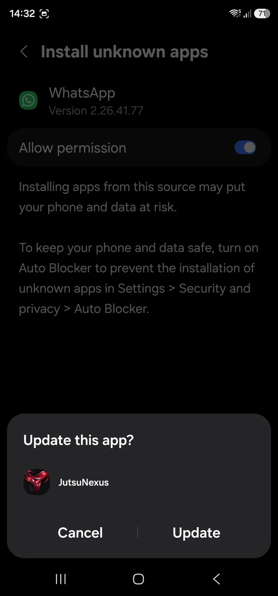
אל תמחקו את האפליקציה כדי לעדכן. מחיקת האפליקציה מוחקת את כל הספרייה שבתוכה – הסרטונים, ההערות והכול. מתקינים את הגרסה החדשה מעל הישנה, בלי למחוק.
גיבוי. הכול נשמר רק בטלפון. מדי פעם כדאי לייצא גיבוי: Profile ← Import / Export ← Export ← Entire Library ולשמור את קובץ ה-ZIP ב-Google Drive או במחשב. אם מחליפים טלפון, מייבאים את הקובץ במכשיר החדש.
טריק: שלחו את קובץ ה-ZIP לעצמכם בוואטסאפ. כדי לשחזר, לחצו עליו בצ'אט ובחרו לפתוח עם JutsuNexus – מסך הייבוא נפתח ישר.
כרגע ממשק האפליקציה באנגלית. את הטכניקות, ההערות והשמות אפשר לכתוב בעברית.
מסדרים לפי אומנות, חגורה, נושא או כל מבנה אחר – תיקיות בתוך תיקיות. לכל טכניקה מוצגת תמונה מהסרטון הראשון שלה, וחיפוש מהיר מוצא כל טכניקה לפי שם, תגית או תיאור.

כל טכניקה מקבלת דף משלה:

לחיצה על התמונה של טכניקה בספרייה מנגנת את כל הסרטונים בתיקייה, אחד אחרי השני. החלקה עוברת לסרטון הבא, גם בטכניקה הבאה – מצוין לחזרה לפני אימון או מבחן חגורה. בלשונית המדיה של טכניקה אפשר לקבוע את סדר הסרטונים.

וידג'ט במסך הבית פותח את המצלמה בלחיצה אחת. הצילומים נאספים ב"תיבת הצילומים", ומשם משייכים אותם לטכניקה קיימת או פותחים ממנה טכניקה חדשה. הסרטונים נדחסים אוטומטית כדי לחסוך מקום.


מדריך מייצא את תוכנית הלימוד, שם אותה ב-Google Drive ושולח קישור. התלמידים נרשמים לתוכנית מהקישור ומקבלים אותה לקריאה בלבד. כשהמדריך מעדכן את הקובץ, התלמידים לוחצים Check for updates ומקבלים את הגרסה החדשה.
הכול נשמר בטלפון. אינטרנט צריך רק כשפותחים קישור או מעדכנים תוכנית לימוד.
אין הרשמה, אין שרת, ואף אחד לא רואה את הספרייה שלכם.
בכפתור "שיתוף" של YouTube בוחרים JutsuNexus, והסרטון נשמר כקישור בטכניקה.
בפרופיל בוחרים את איכות הסרטונים והתמונות ורואים כמה מקום הספרייה תופסת.
האזהרות מופיעות לכל אפליקציה שמותקנת מחוץ לחנות Google Play, לא רק לזו. האפליקציה לא דורשת חשבון, לא אוספת מידע ולא שולחת את הספרייה שלכם לשום מקום. היא משתמשת באינטרנט רק כשאתם פותחים קישור.
כרגע לא. האפליקציה זמינה לאנדרואיד בלבד. קישורי ה-QR של טכניקות נפתחים גם באייפון, בדפדפן.
זה קורה כשמותקנת בטלפון גרסה ישנה של JutsuNexus שנחתמה אחרת (למשל גרסת ניסיון שקיבלתם ישירות). פתחו את האפליקציה הישנה, ייצאו את כל הספרייה (Profile ← Import / Export ← Export ← Entire Library), שמרו את הקובץ, מחקו את האפליקציה הישנה, התקינו את החדשה וייבאו את הקובץ.
סיבות נוספות: אין מספיק מקום פנוי (צריך לפחות 250MB: הקובץ שהורד ועוד האפליקציה), או שההורדה לא הושלמה – נסו להוריד שוב.
בסמסונג – כבו את החוסם האוטומטי. בכל טלפון אחר – פתחו את הקובץ מאפליקציית הקבצים, בתיקיית הורדות.
מספר הגרסה האחרונה כתוב מתחת לכפתור ההורדה בראש הדף. את הגרסה המותקנת אצלכם רואים בלשונית Profile באפליקציה.
האפליקציה עצמה תופסת כ-120MB אחרי ההתקנה. הספרייה תופסת לפי כמות הסרטונים, ודחיסת הסרטונים (בפרופיל) מקטינה אותם משמעותית.